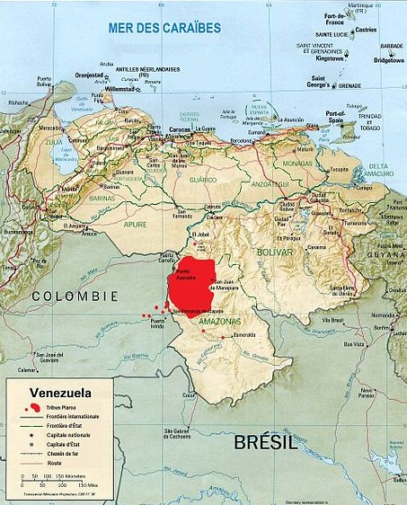

El pueblo piaroa es uno de los más numerosos en el estado Amazonas, ocupando grandes extensiones de territorio no solo en ese estado, sino también en Bolívar y algunas zonas cercanas a Colombia. Hacia la década de 1960, Johannes Wilbert en su obra Indios de la región Orinoco Ventuari. Entre los estados Amazonas y Bolívar se ubican geográficamente los wótjüja o piaroa. El ambiente natural en el que se desenvuelven les permite obtener de la caza. la pesca. La recolección, el conuco y la huerta sus fuentes de alimentación. Pero también es en la naturaleza donde obtienen las materia primas necesarias para crear sus viviendas y otros productos como cestas, tintes, collares, máscaras y utensilios de coana.
Autodenominados como gente pacifica, este pueblo ha sabido entender la naturaleza, adaptándola a su modo de Vida, cotidianidad y cosmovisión. Para los piaroas el trabajo en equipo es esencial, de allí que sus miembros colaboren diariamente en cada una de las tareas que son necesarias para mantener a la comunidad. El rųvwą o shamán es, por su parte, el encargado del poder político y espiritual, liderando una parte de los aspectos de la vida terrenal de la colectividad y sus relaciones con el más allá. Su misión es lograr que haya un equilibrio para que exista la salud, la prosperidad y la seguridad de los habitantes del pueblo wótjüja.